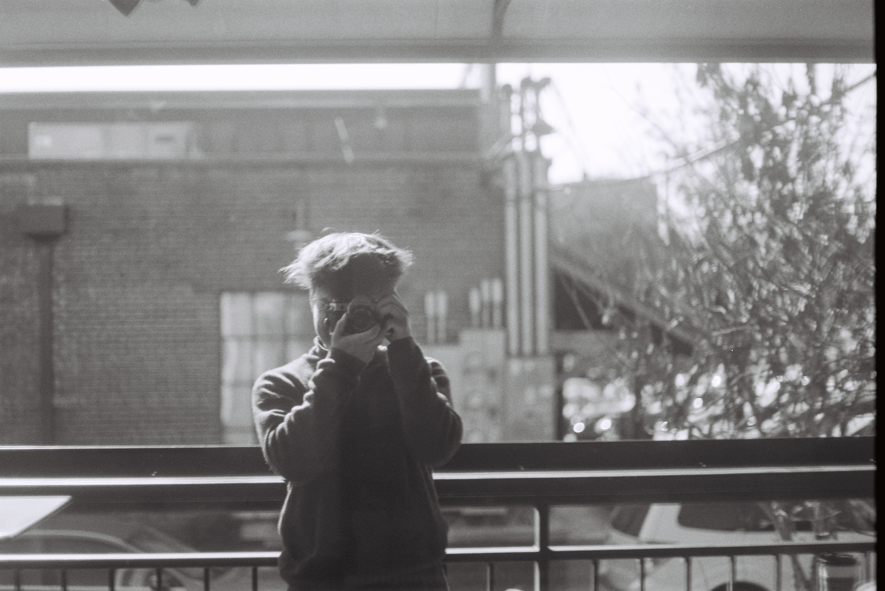

work in progress.
in design all layouts preliminary. replacing adobe hosted website in order to keep a longer digital archive of my digital oddities. links will definitely be broken for a while. figuring it all out as I go.
architectural studios
photography

about
associate aia - architectural designer. fay jones school of architecture b.arch graduate 2025. currently working in st. louis.